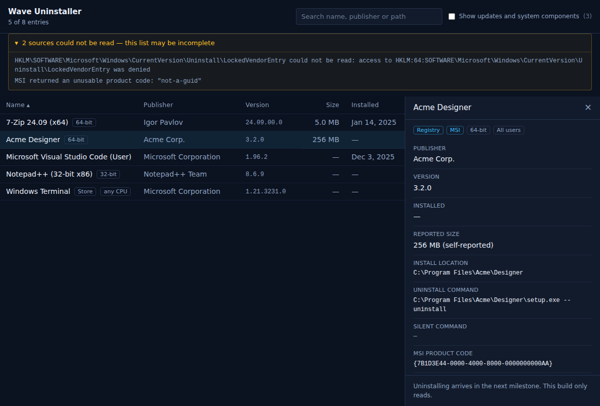

Findet, was installiert ist
Aus drei Quellen: den Registry-Uninstall-Schlüsseln, der MSI-Produktdatenbank und den Store-Paketen. Alles, was in mehreren davon auftaucht, wird zu einer Zeile zusammengeführt.
Fertig
Phase P0 von 5 — liest das Inventar, löscht noch nichts
Der schwierige Teil sind die Reste: verwaiste Registry-Schlüssel, zurückgelassene Ordner
in AppData, Dienste, die nichts mehr starten, Autostart-Einträge für
Programme, die es nicht mehr gibt. Wave findet sie — und kann jeden einzelnen Schritt
rückgängig machen.
Windows 10 (1809+) und 11 · x64 und arm64 · Tauri 2, Rust, React

Aus drei Quellen: den Registry-Uninstall-Schlüsseln, der MSI-Produktdatenbank und den Store-Paketen. Alles, was in mehreren davon auftaucht, wird zu einer Zeile zusammengeführt.
Fertig
Nach dem nativen Uninstaller sucht Wave nach dem, was übrig blieb: Ordner, Registry-Schlüssel, Dienste, geplante Tasks, Autostart-Einträge, Verknüpfungen, Prefetch-Dateien.
Geplant — P2
Jede Löschung wandert erst in ein Backup, jede Operation wird vorher in ein Journal geschrieben. Auch ein Absturz mitten im Vorgang lässt sich zurückrollen.
Geplant — P3
Ein Uninstaller, der einmal das falsche Verzeichnis erwischt, ist unbenutzbar. Zwei Entscheidungen tragen deshalb den ganzen Entwurf.
Nichts wird direkt entfernt. Dateien wandern unter Beibehaltung ihrer Pfadstruktur in
einen Backup-Ordner, Registry-Schlüssel werden als JSON und als importierbare
.reg-Datei gesichert, Dienste und Tasks als vollständige Konfiguration.
Nicht der Papierkorb: der kann keine Registry-Schlüssel, hat pro Laufwerk ein Größenlimit und wird geleert, ohne nachzudenken.
Der Kern ruft nie eine Windows-API auf. Er liest ausschließlich über ein Trait, für das es zwei Implementierungen gibt: die echte, und eine, die einen erfundenen Registry- und Dateisystem-Zustand aus JSON liest.
Damit läuft die Logik, die entscheidet, welche Dateien gelöscht werden dürfen, in Millisekunden gegen eingefrorene Testfälle — statt manuell in einer VM. Ein Uninstaller, dessen Entscheidungen man nur durch Ausprobieren prüfen kann, wird nie vertrauenswürdig.
WinSxS,
alles im Besitz von TrustedInstaller, geteilte Laufzeiten wie die
VC++-Redistributables, und jeden Pfad, der zum Installationsverzeichnis eines
anderen installierten Programms gehört. Diese Prüfung läuft vor der Bewertung,
nicht danach.
Die Reihenfolge ist nicht verhandelbar: erzwungene Deinstallation ohne funktionierendes Undo wäre ein Datenverlust-Feature.
Registry, MSI und Store-Pakete lesen und als sortierbare Liste anzeigen.
Nativen Uninstaller starten, auf den gesamten Prozessbaum warten, offensichtliche Reste entfernen.
Vollständige Suche, Bewertung jedes Fundes, harte Schutzliste.
Journal, Wiederherstellung, Systemwiederherstellungspunkte.
Reste ohne Deinstallation finden, Autostart-Verwaltung, erzwungene Deinstallation bei kaputtem Uninstaller.
Übersetzungen, Code-Signing, Installer, automatische Updates.